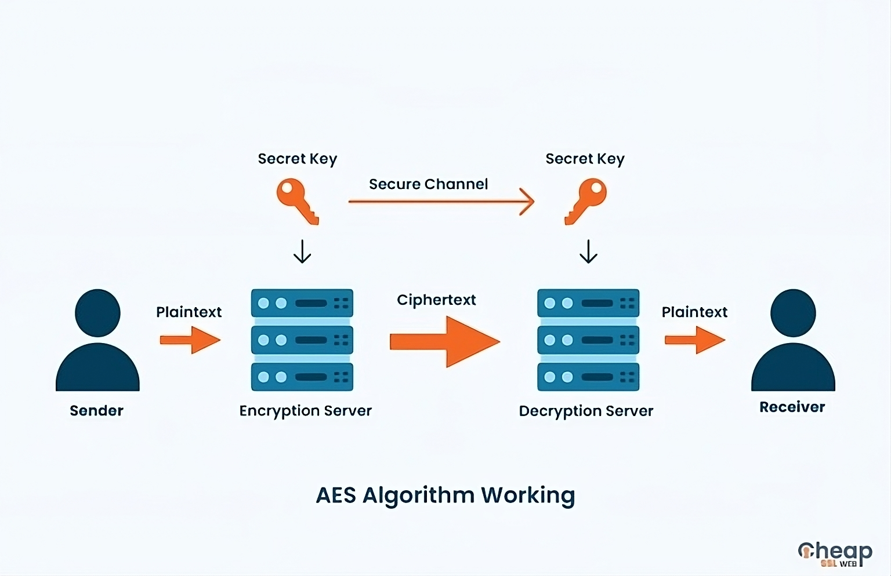
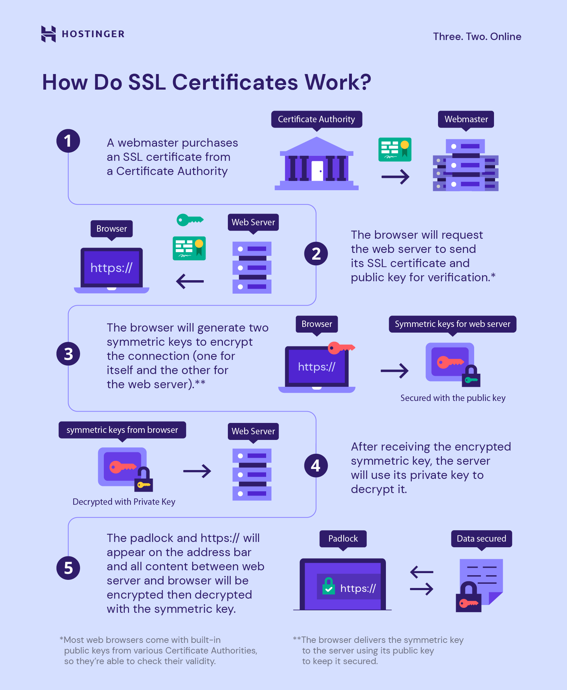
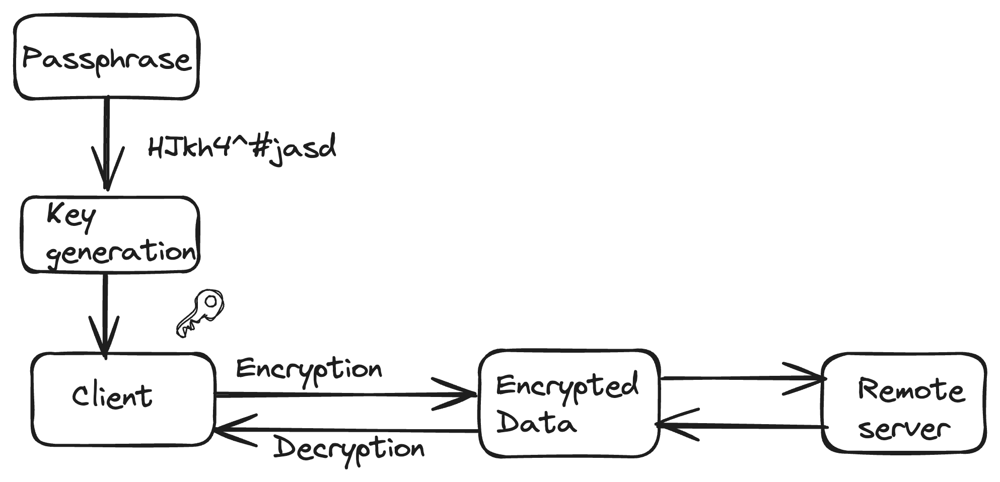
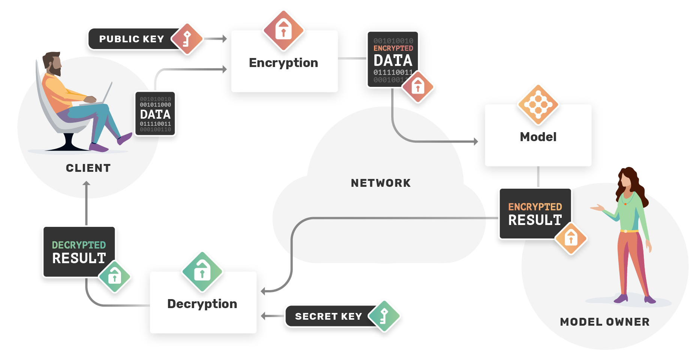

Шифрування данних у стані спокою (at-rest encryption) - це шифрування данних що зберігаються на серверах хмарного провайдеру

Оптимальний вибір: AES-256
Шифрування данних у стані передачі (in-transit encryption) - це шифрування данних під час передачі данних між клієнтом та сервером

Оптимальний вибір: SSL/TLS
Шифрування на стороні клієнта (client-side encryption) - це шифрування данних користувачем перед завантаженням у хмару, а ключ доступу зберігається у
користувача

Гомоморфне шифрування - дозволяє виконувати обчислення над зашифрованими даними без їхнього дешифрування.
